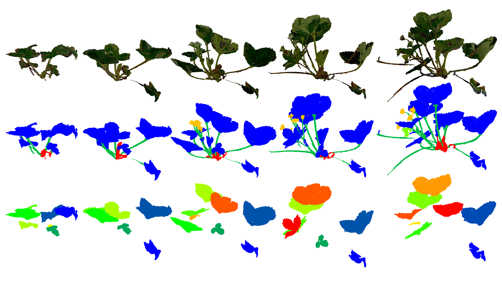
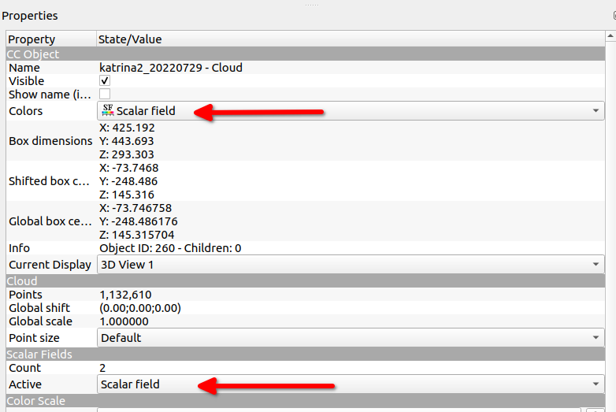

Data preview: Example point cloud, alternating between original textures and instance annotations.

Data preview: Example time series of the same plant with original texture (top), class annotations (middle), and leaf instances (bottom).
The data set
This data set contains point clouds of 6 strawberry plants, each captured 14 times over the span of 11 weeks (13/05/2022 - 29/07/2022).
A total of 84 point clouds are provided with an average of over 1.17 million points per scan.
Of these, 13 are annotated with class and instance labels for each point in the cloud.
The 6 plants are of two varieties, which we will denote as 'Variety A' and 'Variety B' in order to maintain confidentiality.
Methodology
The scans were recorded using the Shining 3D Einscan Pro 2x handheld scanner,
equipped with the 'Color Pack' add-on.
The scanner operates based on structured-light projections, so while the plants were regularly housed under polytunnels
at the University of Lincoln Riseholme campus farm, the plants were carefully
moved into a controlled scanning environment for each data collection. The scanning chamber was set up to provide low and diffuse indirect light,
optimizing conditions for data capture. The scanner was calibrated before each use. All scans are provided true to real-world scale in the mm unit.
Each sequence of scans of the same plant were aligned manually using CloudCompare, and thus a common global coordinate frame can not be assumed.
Data structure and file format
We provide each scan as an .xyz text file with up to 8 columns per points (X, Y, Z, R, G, B, class, instance), providing the 3D coordinates, followed by RGB values, and the class and instance labels where available.
Files are named by their plant variety and ID, followed by the capture date in year-month-day format, e.g. A2_20220729.xyz
An added 'a' at the end of the file name indicates that the scan is annotated.
The scan B3_20220715 is missing colour information.
Annotations
Where available, two labels are provided per point: one class label and one instance label to distinguish individual organ instances of the same class.
Please note that the instance labels are not ordered by emergence date of each organ and not temporally consistent.
The classes are:
leaf or leaflet
stem (incl. petiole, peduncle, pedicel, and stolon)
berry
flower
crown
background (incl. soil, grow bags, neighboring plants, and any other objects captured in the background)
other (any unidentifiable structure within the plant, which may include newly emerging organs that are not yet identifyable)
the scanning table
emergent leaf or leaflet
Code and ressources
We provide a small python code sample here for loading the data set, optionally using Open3D or Numpy.
We also recommend using CloudCompare to inspect the data.

Make sure to flick through these two drop-down menus in the Properties window to display the labels where available. You can display original colour, class labels, and instance labels.